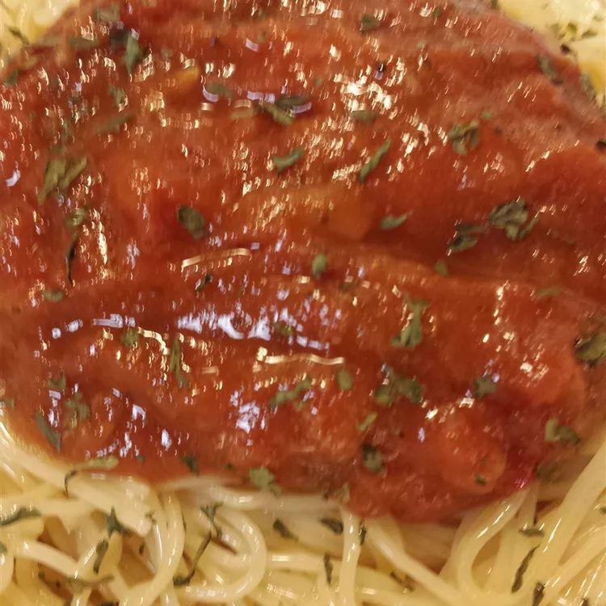

Patrick's Arrabiata Sauce

Description
Arrabbiata sauce, known in Italian as sugo all'arrabbiata (arabbiata in Romanesco dialect), is a spicy sauce for pasta made from garlic, tomatoes, and dried red chili peppers cooked in olive oil. The sauce originates from the Lazio region of Italy, and particularly from the city of Rome.
Ingredients
- 1 cup olive oil
- ¼ cup unsalted light butter
- 6 large cloves garlic, thinly sliced
- 5 yellow onions, sliced 1/4-inch thick
- 1 cup red cooking wine
Steps
- Place olive oil, butter, and garlic in a large pot; turn heat to high until garlic begins to sizzle, about 2 minutes. Turn heat down to medium; stir in onions and cook and stir until onions are translucent, 2 to 3 minutes. Pour wine over onion mixture; simmer until wine is partially evaporated, about 10 minutes.
- Place tomatoes and basil in the bowl of a food processor; pulse to blend until tomatoes are chunky. Pour tomatoes into onion mixture; cook, stirring about every 5 minutes, until sauce darkens to a deep red color, about 40 minutes. Turn off heat.
- Working in batches, pour the sauce into a food processor and blend until smooth. Stir tomato paste, smoked paprika, sugar, and cayenne pepper into tomato mixture; season to taste with salt.